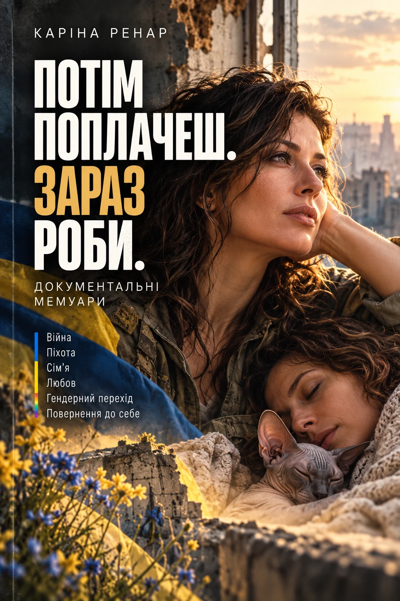

Виросла й тривалий час жила в Запоріжжі.
Українська письменниця · ветеранка
Каріна
Ренар
Історія, яку не можна було
залишити ненаписаною.
Документальні
мемуари
мемуари
01 / КНИГА
ПОТІМ
ПОПЛАЧЕШ.
ЗАРАЗ РОБИ.
Про життя, війну,
повернення й право
бути собою.

Завершений рукопис
Анотація
Війна. Гендерний перехід. Сім’я. Дві жінки вирішують зберегти стосунки попри зміни, до яких не були готові.
Каріна служить в аеророзвідці та піхоті, переживає обстріли, загибель побратимів і власне поранення. Повернувшись із фронту, вона намагається знову знайти своє місце в цивільному житті. Але водночас наважується зробити те, що відкладала роками, — почати гендерний перехід та жити як жінка.
Її дружина Наталя теж опиняється перед змінами, яких не очікувала. Їм доводиться заново говорити про близькість, прийняття, шлюб і майбутнє та разом долати наслідки війни після повернення Каріни з фронту.
«ПОТІМ ПОПЛАЧЕШ. ЗАРАЗ РОБИ.» — документальні мемуари української ветеранки й трансжінки про життя до повномасштабного вторгнення, службу на війні, повернення додому, гендерний перехід і збереження сім’ї.
Написати авторці ↗02 / АВТОРКА
Жінка, яка
це прожила.
Служила у 92-й бригаді Збройних сил України: спочатку в аеророзвідці, згодом у піхоті. Брала участь у бойових діях, зокрема в Серебрянському лісі.
Після поранення проходила лікування та реабілітацію. Має статус учасниці бойових дій. Нагороджена державною нагородою України — медаллю «Захиснику Вітчизни» відповідно до Указу Президента України.
Живе в Німеччині. Пише документальні книги та авторські тексти про війну, ветеранський досвід, життя жінок і власний життєвий шлях.
03 / ЗВ’ЯЗОК
Зв’язок
з авторкою.
Для видавництв, медіа та читачів. Є запитання про книгу або пропозиція співпраці? Напишіть мені.
ВАШ ЛИСТ
Слова
мають значення.
Укажіть свою електронну адресу, щоб я могла відповісти вам особисто.